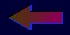

|
|
||
|  |
|
There's no reason for my death wish, I have "nothing to feel sorry for myself about" (not my words) but I seem to spend every waking moment swamped in this disgusting self pity. I feel really bad because so many of you have such real pain, mine is nothing yet it consumes me entirely. I can't stop thinking about how I can get away from it and I know death is the only escape.
I think I'm normal. I don't think I'm depressed. Everybody else seems to be looking at the world through a pink-tinted looking-glass. I thought nobody else could see things the way I do until I stumbled into the ash group.
It's as if all of you are the only other people in the world who can see things clearly, see life for it's true worth and realise just how intolerable it really is. I'd like to thank you all for existing, and letting me share a small part of your world. I know this is quite presumptuous of me, but this is the only place I've ever found where I feel like I fit in. Maybe I don't quite fit here either. It feels like I do though, and it's nice to know I'm not entirely alone. Thank you.
-Laura Higgins